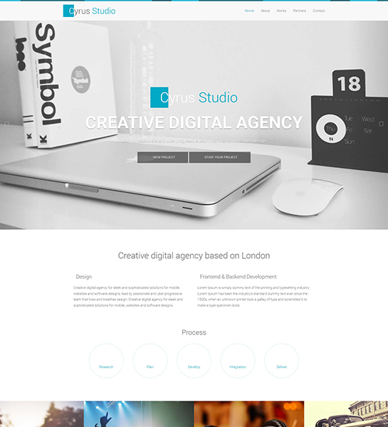
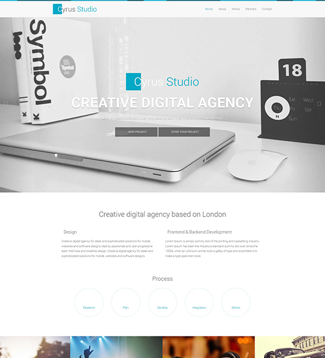

Our Services
Niuorbit Digital Agency provides a range of high-quality services to help small business owners establish and maintain a strong online presence. Our team of experts specializes in:
- Website Design and Development
- Search Engine Optimization (SEO)
- Social Media Marketing
- E-Commerce Solutions
- Website Maintenance and Support
Our website design and development services are tailored to meet the unique needs of each client. We take the time to understand your brand and create a website that reflects your business's values and goals. Our team uses the latest design trends and tools to create a user-friendly, responsive, and visually appealing website that drives conversions and sales. Our SEO services are designed to improve your website's visibility and ranking on search engine results pages (SERPs). We conduct in-depth research to identify the most relevant keywords for your business and optimize your website's content, structure, and metadata accordingly. Our team also focuses on off-page SEO techniques to improve your website's authority and credibility.
Social media marketing is another essential service that we offer. Our team develops comprehensive social media strategies that align with your business objectives and target audience. We create engaging content, manage your social media accounts, and track performance metrics to ensure your social media efforts are effective. If you're looking to sell products or services online, our e-commerce solutions can help. We develop secure, user-friendly e-commerce platforms that are optimized for conversions and sales. Our team also offers support and maintenance services to ensure your website is always up-to-date and secure.
 

Finally, we understand that website maintenance and support are critical to the success of your online business. That's why we offer ongoing maintenance and support services to ensure your website is always functioning optimally. We monitor your website's performance, provide timely updates, and offer technical support whenever you need it. Overall, Niuorbit Digital Agency is a one-stop-shop for small businesses looking to establish and maintain a strong online presence. Our team of experts is committed to delivering high-quality services that help our clients achieve their business objectives and succeed online.